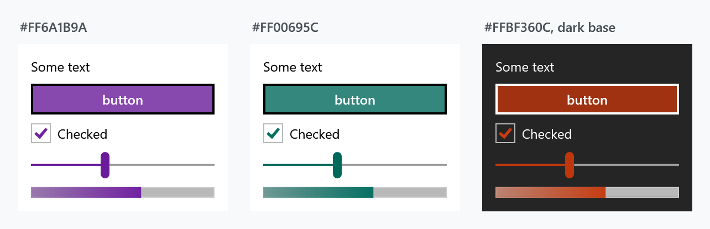

ThemeManager is the class behind everything a theme does after startup: switching, detecting, following the Windows setting, and building themes that are not in the box. It lives in ControlzEx, not in MahApps.Metro, so every snippet here starts with
using ControlzEx.Theming;
and works through the singleton ThemeManager.Current. For the forty-six themes that ship with the library and how to pick one in App.xaml, see Usage.
Changing the theme
ThemeManager.Current.ChangeTheme(Application.Current, "Dark.Green");
That swaps the theme for the whole application, and every control follows immediately — the styles reach their colours through DynamicResource, so nothing needs recreating.
The same call takes a FrameworkElement instead, which is how one window, or one panel, gets a theme of its own while the rest of the application keeps the application theme:
public partial class MainWindow : MetroWindow
{
public MainWindow()
{
this.InitializeComponent();
ThemeManager.Current.ChangeTheme(this, "Dark.Red");
}
}
In XAML the equivalent is merging the theme dictionary into the window's own resources:
<mah:MetroWindow.Resources>
<ResourceDictionary>
<ResourceDictionary.MergedDictionaries>
<ResourceDictionary Source="pack://application:,,,/MahApps.Metro;component/Styles/Themes/Dark.Red.xaml" />
</ResourceDictionary.MergedDictionaries>
</ResourceDictionary>
</mah:MetroWindow.Resources>
One axis at a time
Two shortcuts change the base theme or the colour scheme and leave the other alone, which is what a light/dark toggle wants:
ThemeManager.Current.ChangeThemeBaseColor(Application.Current, "Dark");
ThemeManager.Current.ChangeThemeColorScheme(Application.Current, "Emerald");
Finding out what is applied
| Member | |
|---|---|
DetectTheme() |
the theme currently applied to the application, or null |
DetectTheme(element) |
the same for one element |
GetTheme("Dark.Red") |
look a theme up by name without applying it |
GetInverseTheme(theme) |
the same colour scheme on the other base — the light/dark toggle in one call |
Themes |
every theme known to the manager, the built-in ones and any you added |
ThemeChanged |
raised after a change, with the old and new theme |
var current = ThemeManager.Current.DetectTheme(Application.Current);
if (current is not null)
{
ThemeManager.Current.ChangeTheme(Application.Current, ThemeManager.Current.GetInverseTheme(current));
}
Themes is what to bind a theme picker to; each Theme carries a DisplayName, a BaseColorScheme, a ColorScheme and a ShowcaseBrush for the swatch.
Following Windows
ThemeSyncMode decides how much of the Windows personalisation setting the application adopts. It is a flags enum:
| Value | |
|---|---|
DoNotSync |
ignore Windows entirely |
SyncWithAppMode |
follow the light/dark app mode |
SyncWithAccent |
follow the Windows accent colour |
SyncWithHighContrast |
follow the high-contrast setting |
SyncAll |
all three |
Set the mode, then sync once; after that the manager keeps up with changes on its own:
protected override void OnStartup(StartupEventArgs e)
{
base.OnStartup(e);
ThemeManager.Current.ThemeSyncMode = ThemeSyncMode.SyncAll;
ThemeManager.Current.SyncTheme();
}
SyncWithAccent generates a theme from whatever colour the user picked, which is the mechanism the next section uses directly.
A theme from any colour
RuntimeThemeGenerator builds a complete theme — every brush, both the accent ramp and the greys — from a base theme and one colour. No dictionary to write:

var theme = RuntimeThemeGenerator.Current.GenerateRuntimeTheme("Light", Color.FromRgb(0x6A, 0x1B, 0x9A));
ThemeManager.Current.AddTheme(theme);
ThemeManager.Current.ChangeTheme(Application.Current, theme);
Each panel in the figure is that call with a different colour, applied to the panel rather than to the application — ChangeTheme takes an element, so a theme can be scoped to as little as one Border.
Generate both bases if the application has a light/dark toggle, so GetInverseTheme has somewhere to go:
foreach (var baseTheme in new[] { "Light", "Dark" })
{
ThemeManager.Current.AddTheme(RuntimeThemeGenerator.Current.GenerateRuntimeTheme(baseTheme, brandColour));
}
AddTheme also takes a hand-built Theme, if you want to control the name and the showcase brush:
ThemeManager.Current.AddTheme(new Theme("CustomDarkRed", "CustomDarkRed", "Dark", "Red", Colors.DarkRed, Brushes.DarkRed, true, false));
A theme written by hand
When the generated ramp is not what you want — a brand palette with its own greys, say — write the dictionary yourself and register it as a library theme:
var theme = ThemeManager.Current.AddLibraryTheme(
new LibraryTheme(
new Uri("pack://application:,,,/SampleApp;component/CustomAccents/Light.Accent1.xaml"),
MahAppsLibraryThemeProvider.DefaultInstance));
ThemeManager.Current.ChangeTheme(this, theme);
The dictionary needs seven metadata keys at the top, and the manager reads them to place the theme:
<system:String x:Key="Theme.Name">Light.Accent1</system:String>
<system:String x:Key="Theme.Origin">MahAppsMetroThemesSample</system:String>
<system:String x:Key="Theme.DisplayName">Accent1 (Light)</system:String>
<system:String x:Key="Theme.BaseColorScheme">Light</system:String>
<system:String x:Key="Theme.ColorScheme">Accent1</system:String>
<Color x:Key="Theme.PrimaryAccentColor">#FFD80073</Color>
<SolidColorBrush x:Key="Theme.ShowcaseBrush" Color="#FFD80073" options:Freeze="True" />
Everything after that is colours and brushes. A complete worked example is available as a file — five hundred lines, which is why it is not printed here.
Two things to plan for.
Write the dark counterpart as well, Dark.Accent1.xaml with Theme.BaseColorScheme set to Dark. A theme that exists in only one base leaves GetInverseTheme and SyncWithAppMode with nowhere to go.
The authoritative list of what a theme can define is Theme.Template.xaml in the library — 422 keys, of which 79 vary between themes. A dictionary that omits one falls back to whatever was there before, which is rarely what you meant. See Usage for how the shipped themes are generated from that template.
A complete sample project is on GitHub.
Related
Usage for the themes that ship with the library and the naming, and the quick start for putting the first one in place.